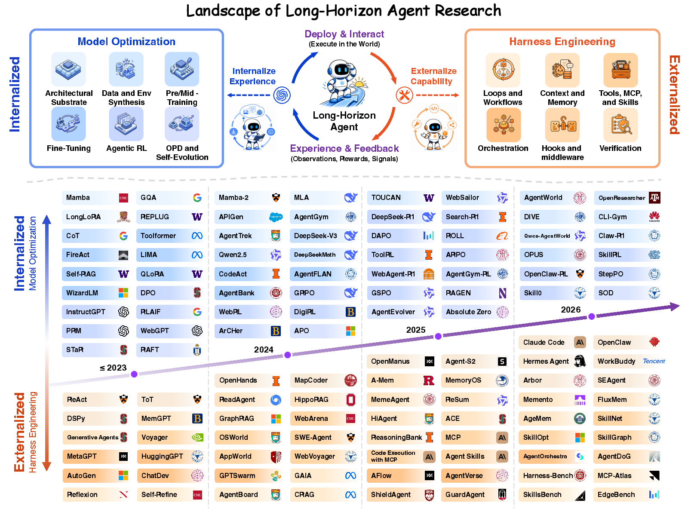
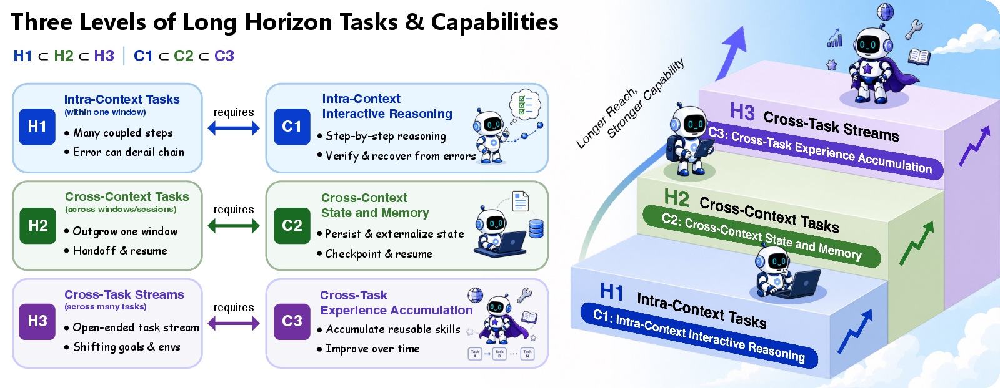

Survey: Long-Horizon Agents as Harness x Optimization Co-Evolution
TL;DR
- "Towards Long-Horizon Agents: A Survey" (Guanting Dong et al., ~20 authors led by Renmin University's NLPIR group, with Peking, Tsinghua, Sun Yat-sen, HKUST, NUS; OpenReview + companion GitHub) is billed as the first comprehensive survey of long-horizon agents, motivated by the exponentially growing autonomous task horizon of deployed agents.
- Its organizing formalism is Agent = π_θ ⊕ H: capability emerges from a base policy coupled to a harness, and progress is the co-evolution of externalized harness engineering and internalized model optimization — features proven in the harness get absorbed into the model, and stronger models enable more ambitious harnesses.
- The taxonomy: three nested difficulty levels (H1 intra-context, H2 cross-context, H3 cross-task), a three-era history (prompt engineering → context engineering 2023–2025 → runtime harnesses 2025–present), six harness components (loops, context/memory, tools, orchestration, hooks, verification), and a seven-part optimization stack from architecture through agentic RL, on-policy distillation, and self-evolution.
Why this matters
Long-horizon capability is the axis on which agents are actually improving fastest — the tweet's "task horizon is growing exponentially" framing echoes the well-known METR measurement that the task length agents can complete autonomously has been doubling on a steady clock. But the literature explaining why is fragmented into silos: memory papers, RL papers, scaffolding papers, multi-agent papers, each with their own vocabulary. What has been missing is a synthesis that treats the harness — the loops, memory, tools, and verification machinery around the model — as a first-class object of study rather than engineering trivia, and that explains how harness work and model training interact over time.
The survey's co-evolution thesis is the connective tissue for essentially this entire reading list. It gives you the two-pillar map on which the other harness papers sit: Recursive Harness Self-Improvement lives in the harness pillar (self-evolution of the scaffold), OpenForgeRL in the optimization pillar (agentic RL inside real harnesses), the harness-generalization paper is a caution about evaluating the harness pillar, and Harness Handbook is tooling for maintaining it. If you read one framing document to organize the 2026 harness literature, this is the candidate.
The core idea
The single key insight is that long-horizon ability is a system property, not a model property, and the correct decomposition is:
- Externalized harness engineering (H): capabilities implemented explicitly and symbolically around the model — agent loops and workflows, context/memory management, tools (MCP, skills), multi-agent orchestration, hooks/middleware, and verification.
- Internalized model optimization (π_θ): capabilities baked into weights — architecture, data synthesis, pre/mid-training, fine-tuning, agentic RL, on-policy distillation, and self-evolution.

Figure from the survey (via the companion GitHub repo): the landscape of long-horizon agent research, organized around externalized harness engineering and internalized model optimization.
The two pillars co-evolve: "capabilities first implemented explicitly in the harness may later be internalized into the model policy, while stronger policies enable more capable harnesses." This is a ratchet, and it has real predictive content: it tells you today's harness features (compaction, self-verification, retry logic) are candidate training targets for tomorrow's models, and it explains historical transitions — e.g., hand-scaffolded chain-of-thought and ReAct-style loops becoming native behaviors of reasoning models. It also implies a division-of-labor question at any moment: which capabilities should live in the harness (auditable, editable, cheap to iterate) versus in the weights (fast, robust, compounding)?

Figure from the survey (via the companion GitHub repo): three levels of long-horizon tasks and the corresponding capabilities — nested as \(H_1 \subset H_2 \subset H_3\) with matching capability classes \(C_1 \subset C_2 \subset C_3\).
The difficulty ladder sharpens "long-horizon" beyond vibes: H1 tasks fit within one context window; H2 tasks exceed it and force cross-context state carryover (compaction, external memory, checkpointing); H3 tasks span multiple tasks, requiring experience reuse and improvement across episodes. Each level demands qualitatively different machinery, which is why single-number "long-horizon" claims mislead.
How it works
As a survey, its "method" is the taxonomy. The structure (from the GitHub companion and project site):
- Foundations. Formalizes the agent as π_θ ⊕ H and defines the H1/H2/H3 difficulty levels.
- Evolution. Three historical stages: prompt engineering (roughly 2020–2023), context engineering (2023–2025), and runtime harnesses (2025–present) — the current era treating the harness as a persistent runtime system rather than a prompt template.
- Harness pillar. Six component families: (a) loops/workflows — the control flow of act/observe/replan; (b) context and memory — compaction, external stores, retrieval; (c) tools — function calling, MCP, skills; (d) orchestration — sub-agents and multi-agent topologies; (e) hooks/middleware — interception points for guardrails and automation; (f) verification — checking work before committing it.
- Optimization pillar. Architecture; data synthesis; pre-training; fine-tuning; agentic RL; on-policy distillation; self-evolution — ordered roughly by distance from deployment.
- Applications. Software engineering, information seeking, computer use, multimodal agents, general-purpose assistants.
- Benchmarks and Frontiers. Evaluation for long horizons and open problems.
The organizing formalism. The survey's central equation-level claim (from the project site and companion repo; the PDF itself was bot-walled — reconstruction, verify against the paper) is the composition
where \(\pi_\theta\) is the base policy (weights) and \(H\) the harness; capability is a property of the composed system, not of either part. The difficulty ladder is a strict nesting of task classes with matching capability classes:
where \(H_1\)/\(C_1\) is intra-context, \(H_2\)/\(C_2\) cross-context, and \(H_3\)/\(C_3\) cross-task — each level strictly contains the previous, so a system certified at \(H_2\) must already handle \(H_1\).
The co-evolution thesis, rendered as a loop (schematic reconstruction of the survey's argument, not an algorithm from the paper):
Co-evolution ratchet (schematic):
repeat across model generations t:
# externalized: iterate the harness around the frozen policy
H_t <- engineer(loops, context/memory, tools, orchestration,
hooks, verification) around pi_t
deploy (pi_t (+) H_t); collect execution traces
# internalized: train the next policy on what the harness proved out
pi_{t+1} <- optimize(pi_t) on traces + synthesis + agentic RL + distillation
# ratchet: proven harness features migrate into weights
retire harness features pi_{t+1} now does natively
# stronger policy enables more ambitious scaffolding
design H_{t+1} targeting the next difficulty level (H1 -> H2 -> H3)
The companion repo (RUC-NLPIR/Awesome-Long-Horizon-Agents) maintains the paper lists per taxonomy cell, making the survey a living index rather than a snapshot. Note: the OpenReview PDF was not fetchable when writing this tutorial (bot wall), so the section detail above comes from the project site and repo; exact per-section paper counts and the verbatim abstract should be checked against the PDF.
Results
No quantitative results — it is a survey. Its claimed contributions, per the sources:
- First comprehensive survey of long-horizon agents, unifying harness engineering and model optimization in one framework rather than surveying either alone.
- The Agent = π_θ ⊕ H formalism and the H1/H2/H3 nested difficulty levels as shared vocabulary.
- The co-evolution thesis as an explanatory account of 2020→2026 agent progress (three-era periodization), with harness→model internalization as the recurring mechanism.
- A component-level decomposition of modern harnesses (six families) that maps cleanly onto real systems like Claude Code — loops, memory/compaction, tools/MCP/skills, sub-agent orchestration, hooks, verification.
- A curated, maintained taxonomy of the literature (companion GitHub), spanning applications and benchmarks across five domains.
How it connects
Within this reading list, the survey is the map and the other four harness items are territories:
- Recursive Harness Self-Improvement: the survey's "self-evolution" cell applied to the harness itself — and its trace-quality objective is the co-evolution thesis operationalized (harness traces as future training data).
- OpenForgeRL (training-agents-in-harnesses): the agentic-RL cell executed inside the harness pillar's artifacts — the first serious infrastructure for training π_θ and H as a joint system rather than separately.
- No Universally Best Harness: a warning label for the harness pillar — component choices don't compose into a universal recipe, and harness claims need repeated-trial statistics.
- Harness Handbook: maintenance tooling for the harness pillar — behavior localization so that evolving H stays tractable as it grows production-scale.
- Elsewhere in the list, the taxonomy slots items cleanly: agentic-context-management and PRO-LONG (context/memory, H2), MSCE and skill self-play (skills + self-evolution, H3), TRACE (turn-level rewards for the agentic-RL cell), multi-turn OPD (on-policy distillation cell), evolving-benchmarks and the self-improvement survey (239 papers) (evaluation and the adjacent survey — worth reading side by side to see where "long-horizon" and "self-improving" framings diverge).
- Well-known prior work: the pillars' canon includes ReAct and chain-of-thought (loop/prompt era), MemGPT and Reflexion (memory and self-feedback), Voyager (skill libraries, an early H3 system), SWE-agent/SWE-bench (the software-engineering application column), MCP as the tool-standardization layer, and METR's horizon-length measurements as the empirical motivation.
Critical take
- Co-evolution is descriptive, not predictive. The thesis organizes history well but offers little guidance on which harness capabilities will internalize next, on what timescale, or when internalization is a mistake (verification arguably should stay external and auditable). Treat it as a lens, not a law.
- Taxonomy boundaries are soft. Skills sit between tools and memory; hooks blur into orchestration; "self-evolution" appears in both pillars. Component-cell placements of individual papers are judgment calls — use the taxonomy for navigation, not adjudication.
- Survey lag in a fast field. The runtime-harness era it describes is months old and moving; the GitHub index mitigates staleness, but synthesis-level claims (e.g., which harness components matter most) can be outdated by the time you read them.
- "First comprehensive survey" is a marketing claim — adjacent surveys (self-improvement, memory, agentic RL, always-on agents in this very list) cover overlapping ground; its genuine novelty is the harness × optimization joint framing, not exhaustiveness.
- Sourcing caveat: the OpenReview PDF was behind a bot wall at time of writing; author list and taxonomy were taken from the project site and repo. Era date-ranges differ slightly between the two sources (2020–2022 vs. 2020–2023 for the prompt era) — minor, but verify details against the PDF.
- What's missing (open questions the survey should be pressed on): cost/latency as a first-class axis of harness design, safety implications of H3 cross-task learning (state accumulation is also an attack surface — cf. the always-on-agents survey in this list), and quantitative methodology for attributing capability between π_θ and H (the model-vs-harness ablation question that Agents' Last Exam, also in this list, touches empirically).
If you remember three things
- Agent = π_θ ⊕ H: long-horizon capability is a property of the model–harness system, decomposable into six harness component families and a seven-stage model-optimization stack.
- H1/H2/H3 — intra-context, cross-context, cross-task — is the right difficulty ladder: each level demands different machinery, so demand level-specific evidence for any "long-horizon" claim.
- The engine of progress is co-evolution with internalization: harness features are staging grounds for future model capabilities — so read every harness paper (RHI, Handbook, OpenForgeRL) while asking "does this belong in the scaffold or, eventually, in the weights?"